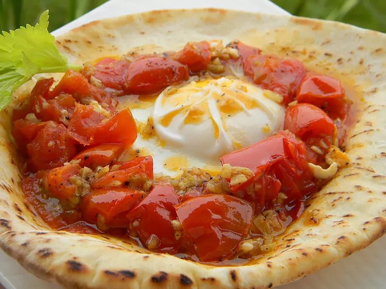

Shakshuka

Eggs in their best form
Shakshuka is a Middle Eastern and North African style dish. I am half-Moroccan so loving this dish is very natural.
Ingredients
- 1 tablespoon olive oil
- 5 large fresh tomatoes, coarsely chopped
- 1 tablespoon minced garlic
- 6 eggs
- 4 pita bread rounds
Steps
- Heat olive oil in a large skillet over medium-high heat.
- Add chopped tomatoes and garlic, stirring occasionally, until liquid has cooked out of tomatoes.
- Carefully break eggs over tomatoes without breaking yolks. Lightly season with salt, reduce heat and cover.
- Simmer covered for 20 minutes, or until yolks are fully cooked.
- Adjust seasoning with salt as needed. Serve with pita pockets.
Return